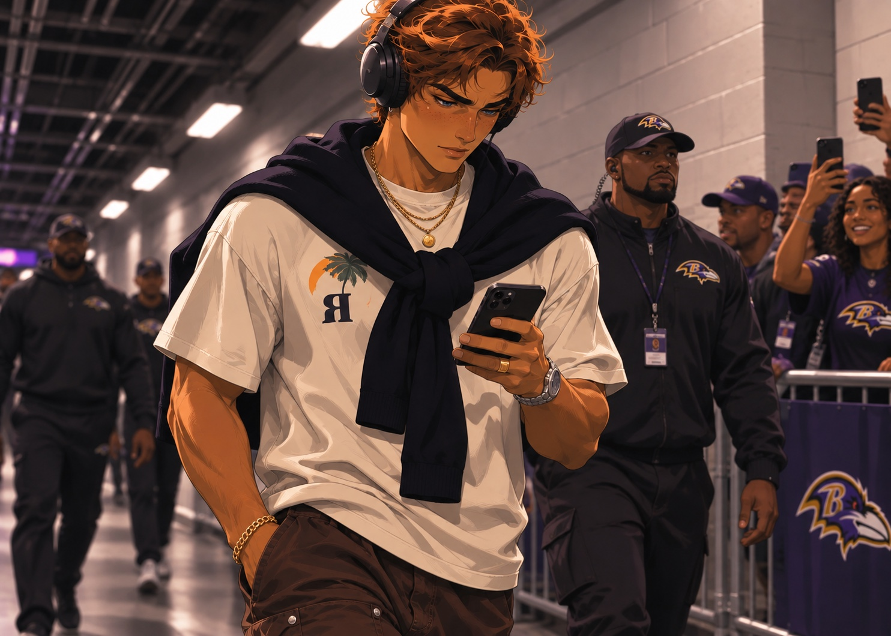

One week after a 316 yard performance, Nasir Cruz's afternoon ends almost as soon as it begins. The rookie suffered a concussion, was listed as questionable to return and remained out for the rest of the game. He played roughly five snaps.
1RECEPTION
12RECEIVING YARDS
35BALTIMORE POINTS
Caleb Williams completes 15 of 22 passes for 193 yards, three touchdowns and no interceptions. Alec Pierce catches six balls for 106 yards and a touchdown, while M. Carroll catches two touchdowns. The Ravens also rush for 201 yards.
Seattle's Sam Darnold is sacked six times. The result is decisive, but the bigger question for Baltimore is Cruz's availability going forward. No return date has been established.
THE WEEK'S QUESTIONIs Baltimore's offense more balanced than critics believed, or did Seattle simply fail to make the Ravens miss their top receiver?